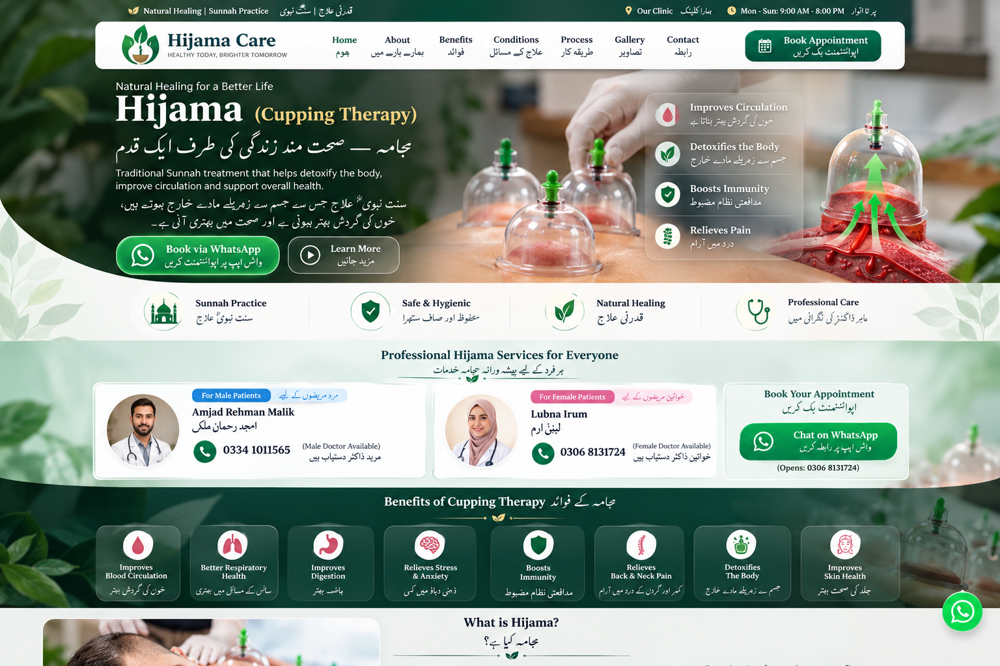
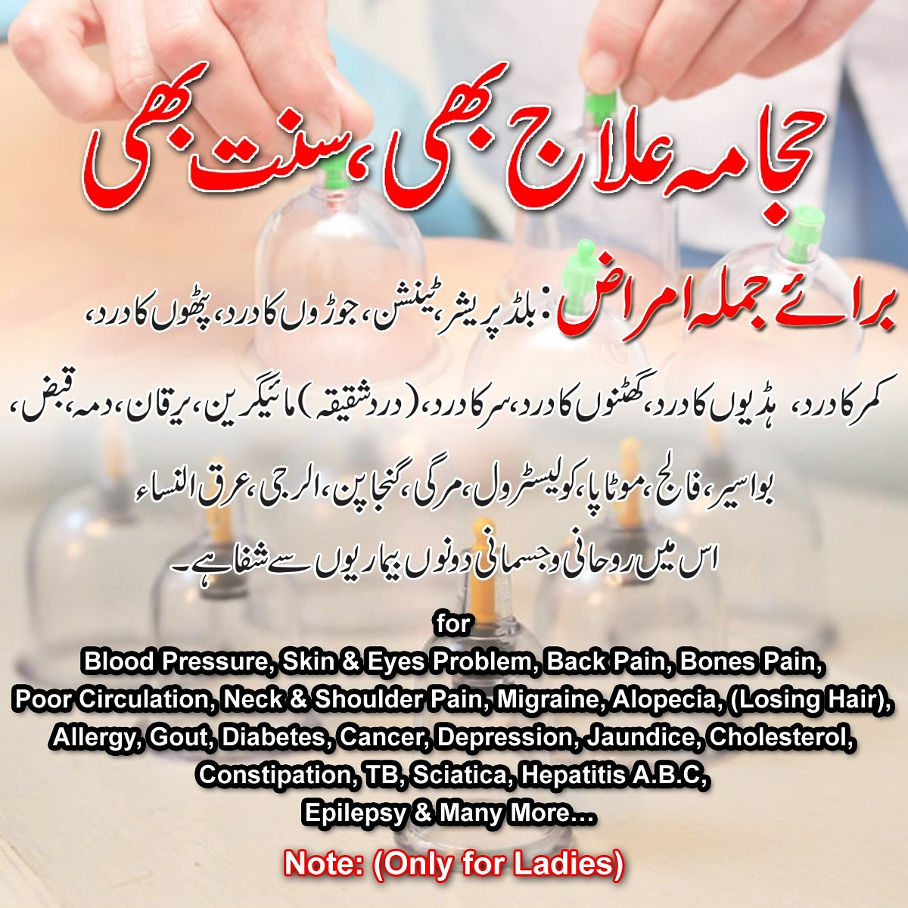
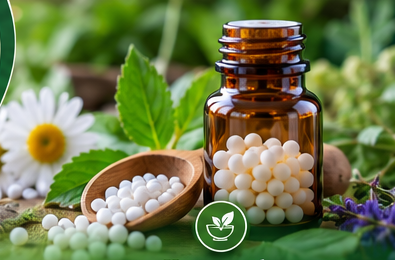

Traditional cupping care
Consultation-led Hijama sessions with careful hygiene, privacy and practical aftercare guidance.
صفائی، رازداری اور مناسب رہنمائی کے ساتھ حجامہ کی سہولت۔
Explore HijamaProfessional Hijama cupping and homeopathic consultation for men and women in a calm, hygienic setting. Personalised appointments with male and female practitioners.
مرد و خواتین کے لیے الگ معالجین کے ساتھ حجامہ اور ہومیوپیتھک مشاورت کی سہولت۔

حجامہ کیا ہے؟

CAREwith dignityHijama, often called wet cupping, is a traditional practice in which cups create gentle suction on selected areas of the skin. Wet cupping additionally involves small superficial skin incisions performed by a trained practitioner.
حجامہ ایک روایتی طریقہ ہے جس میں جسم کے مخصوص حصوں پر کپ لگا کر سکشن پیدا کیا جاتا ہے۔ ویٹ کپنگ میں تربیت یافتہ معالج جلد پر باریک سطحی کٹ بھی لگاتا ہے۔
Responsible care matters. Hijama should not replace diagnosis or treatment from a qualified medical professional. Suitability varies by person, medicines and health history.
حجامہ اور ہومیوپیتھی کی خدمات
Consultation-led Hijama sessions with careful hygiene, privacy and practical aftercare guidance.
صفائی، رازداری اور مناسب رہنمائی کے ساتھ حجامہ کی سہولت۔
Explore Hijama
Discuss your symptoms, health history and current medicines with the practitioner. Any homeopathic plan is considered individually and should not replace necessary medical diagnosis, prescribed medicines or emergency care.
اپنی علامات، طبی تاریخ اور موجودہ ادویات معالج سے شیئر کریں۔ ضروری طبی تشخیص یا ڈاکٹر کی تجویز کردہ دوا کو خود سے بند نہ کریں۔
Book consultationآپ کی ضرورت کے مطابق نگہداشت
Some people seek cupping for temporary relief of muscular tightness and soreness.
پٹھوں کی اکڑن اور تکلیف میں آرام کی غرض سےThe session can be part of a personal relaxation and wellbeing routine.
سکون اور عمومی تندرستی کے معمول کا حصہWe discuss your goals and relevant history before proceeding with a session.
سیشن سے پہلے آپ کی ضرورت اور متعلقہ معلومات پر باتClean technique and appropriate single-use supplies are central to safe practice.
صفائی اور مناسب یک بار استعمال ہونے والے سامان پر توجہClaims that cupping treats or cures serious diseases are not established. Please seek medical care for persistent or concerning symptoms.
آپ کے سیشن کا طریقہ کار
Share your goals, health history and medicines.
اپنی ضرورت، طبی معلومات اور ادویات بتائیںThe practitioner discusses suitable areas and the session.
مناسب مقامات اور سیشن کی وضاحتCups are applied using a careful, hygienic technique.
احتیاط اور صفائی کے ساتھ کپنگReceive practical aftercare guidance before you leave.
سیشن کے بعد ضروری احتیاطی ہدایاتمردوں کے لیے مرد، خواتین کے لیے خاتون معالج
Male practitioner available for Hijama and homeopathic consultation for male clients.
0334 1011565Female practitioner available for Hijama and homeopathic consultation for female clients.
0306 8131724WhatsApp opens directly with the booking number 0306 8131724.
واٹس ایپ کے ذریعے اپوائنٹمنٹ کے لیے رابطہ کریں
مریضوں کی آراء اور تجربات
Call the appropriate practitioner or use WhatsApp for Hijama, homeopathic consultation or appointment questions.
اپوائنٹمنٹ یا معلومات کے لیے رابطہ کریں
Tell your practitioner about medicines, bleeding problems, pregnancy, skin infections, recent surgery and significant medical conditions. Seek qualified medical advice when unsure whether cupping is appropriate for you.
سیشن سے پہلے اپنی ادویات، خون بہنے کے مسائل، حمل، جلدی انفیکشن، حالیہ آپریشن یا اہم طبی حالت کے بارے میں معالج کو ضرور بتائیں۔
Ask on WhatsApp